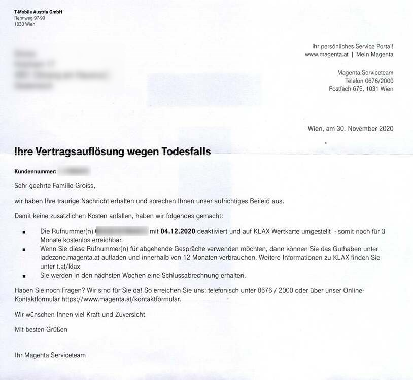

Hello,
hat sich schon etwas getan?
Das ist natürlich schon heftig
 Konnten die dir bei Magenta auch nix sagen, ich mein da muss ja jemand mehr Daten von dir haben als nur die Rufnummer um sowas durchzuführen
Konnten die dir bei Magenta auch nix sagen, ich mein da muss ja jemand mehr Daten von dir haben als nur die Rufnummer um sowas durchzuführen

Habe von Magenta Brief erhalten, mein Vertrag wurde aufgelöst, da ein Todesfall gemeldet wurde. Meine Nummer wurde auf Wertkarte umgestellt. Wie kann so etwas passieren ? Ein Rückruf unter meiner Nummer hätte alles aufgeklärt. Wie kann jemand so mir nicht dir nichts, mich bei Magenta für tot erklären. Nach Rückruf bei Magenta Hotline 3/4 Stunde Warteschleife, wurde mir nur die Auskunft gegeben, dass das Problem weitergeletet und behoben wird. Passiert ist aber bisher nichts. Warte noch das Wochenende ab, werde dann Anzeige gegen unbekannt machen. Man zwickt mir einfach die Nummer ab.
Hello,
hat sich schon etwas getan?
Das ist natürlich schon heftig
 Konnten die dir bei Magenta auch nix sagen, ich mein da muss ja jemand mehr Daten von dir haben als nur die Rufnummer um sowas durchzuführen
Konnten die dir bei Magenta auch nix sagen, ich mein da muss ja jemand mehr Daten von dir haben als nur die Rufnummer um sowas durchzuführen

Hallo Mario: Noch immer keine Reaktion von Magenta. Im Online Kontaktformular gibt es nur automatisierte Standaarlösungen, aber man kommt mit niemand in direkten Kontakt. Mit der Hotline kommt man nach einer 3/4 Stunde mit einer Dame in Kontakt, die auch direkt keine Lösung anbieten kann und nur weitermelden kann. Es gibt keinen kompetenten Ansprechpartner. Es gibt keine Möglichkeit ein Problem als Kunde schriftlich zu melden. So hab ich es jetzt als Anfrage als Neukunde im Businessbereich probiert. Dort ist es möglich eine Textanfrage wegzusenden. Warte aber auch noch auf Antwort. Ist ja auch interessant. Habe 2 Nummern bei Magenta auf meinen Namen. Aufgelöst wurde nur eine Nummer. Habe den Brief zuerst für einen üblen Scherz gehalten, bis ich festgestellt habe, dass tatsächlich der Vetrag aufgelöst und noch für 3 Monate auf Klax Wertkarte umgestellt wurde !!!
Kann, wenn es dich interessiert, den Brief einscannen und beim nächsten Kontakt anhängen
Danke für deine Antwort.
Willi
Hi,
puh das ist ungut
 Ja derzeit sind sie glaube ich sehr überlastet was die Hotline betrifft. Ich warte teilweise auch > 1h.
Ja derzeit sind sie glaube ich sehr überlastet was die Hotline betrifft. Ich warte teilweise auch > 1h.
Nein den Brief musst du nicht scannen - grundsätzlich wäre einfach interessant, was Magenta bekommen hat. Die müssen ja auch irgendeinen Brief zur Abmeldung bekommen haben? Ganz von alleine wird das ja nicht passiert sein

Hi
ja genau das möchte ich ja auch wissen. Aber es ist nicht möglich mit einer kompetenten menschlichen Person das abzuklären.
Detail am Rande, habe es mit Tinka probiert. Habe geschrieben, dass auf Grund einer falschen Anzeige wegen Todesfall mein Vertrag aufgelöst wurde. Die automitsche Tinka hat nur das Wort Todesfall registriert, und ich habe als Antwort erhalten, ich soll die Sterbeurkunde nachreichen. Gehts noch perverser. Das ist Magenta Kundendienst. Das schlimme an der Sache ist, dass es bei anderen Anbietern nicht viel besser sein dürfte. Den Scan sende ich jetzt trotzdem mit, als Beweis des ganzen Irrsinns

Willi
Bearbeitet von Sarah_
1 minute ago, willigroiss said:Die automitsche Tinka hat nur das Wort Todesfall registriert,
Ja Tinka ist leider auch nur AI, also da sitzt kein Mensch dahinter

Ich würde den Brief trotzdem zensieren und die Adresse und Telefonnummer rausnehmen - das Forum hier ist doch öffentlich zugänglich und es muss ja nicht jeder sehen:
@Sarah_
Vielleicht kannst du das übernehmen danke

3 minutes ago, willigroiss said:Aber es ist nicht möglich mit einer kompetenten menschlichen Person das abzuklären.
Das ist traurig zu hören
 Wie oft hast du es denn bei der Hotline versucht?
Wie oft hast du es denn bei der Hotline versucht?
Mit Hotline einmal nach fast eine Stunde Warteschleife, dann inkompetente Lösung, nur weiterleiten des Problems, Servicehotline konnte nicht einmal selber ins System schauen was da passiert sein kann. Hat gemeint, das wäre ein " Systemfehler " Und der Systemfehler hat mir dann den Brief geschickt. Ohne Kontaktperson für Rückfragen im Brief anzuführen, wie es im Geschäftsverkehr eigentlich vorgeschrieben ist. Dafür auf die die Servicehotline - bzw. Kontaktformular hinzuweisen, das keines ist. Eine echte Pflanzerei. Ein toller Hotlineservice. Habs dann gar nicht mehr weiter probiert, ist mir echt zu deppert, meine Zeit am Telefon zu verbringen, hab wichtigeres zu tun. Hab jetzt einen saftigen Brief mit Beschreibung der ganzen Misere
eingeschrieben
an Magenta T Mobile Wien geschrieben, und um eine sofortige Stellungnahme zu dem Vorfall gebeten und um Rückabwicklung der Vertragsauflösung bis Termin 17.12.
Sollte keine Reaktion erfolgen, geht das alles an die Presse und zum Rechtsanwalt. Habe dann keine andere Wahl mehr.
Heute 10.12 um 17:40 Eine SMS - von Magenta. Anschluss wurde wieder hergestellt. Aber Beschwerdebrief ging heute früh zur Post - ist schon unterwegs. Wäre alles sehr einfach und rasch gegangen, würde es ein ordentliches Formular zur Kontaktaufnahme geben, wo man sein Problem einem menschlichen Ansprechpartner mitteilen kann, wie hier. Aber vielleicht hat eh dieses Forum hier etwas nachgeholfen. Was Magenta jetzt nach 6 Tagen dazu bewegt hat, den Anschlusss wieder herzustellen, weiß ich nicht. Es gab bis jetzt keinen weiteren Kommentar oder Entschuldigung für fast eine Woche Ärger und Zeitverschwendung in dieser Angelegenheit - Empfehlenswerter Magenta Kundenservice.
vor einer Stunde schrieb willigroiss:Wäre alles sehr einfach und rasch gegangen, würde es ein ordentliches Formular zur Kontaktaufnahme geben, wo man sein Problem einem menschlichen Ansprechpartner mitteilen kann, wie hier..
Hallo @willigroiss
Schön das, dass Problem bereits gelöst werden konnte. Du kannst dein Anliegen/Anfrage in Zukunft auch über das Kontaktformular hochladen diese dann auch ein Mensch bearbeitet. Loge dich einfach mit deiner Rufnummer und Kundenkennwort ins Kundenportal ein.
habe erst jetzt nach langem suchen dieses Formular gefunden. Ist leider sehr versteckt und erst nach mehreren Auswahlmenüs zu finden.
Danke.
.png.2d307c832b0470fe9637501f60d784ce.png){kind=link}